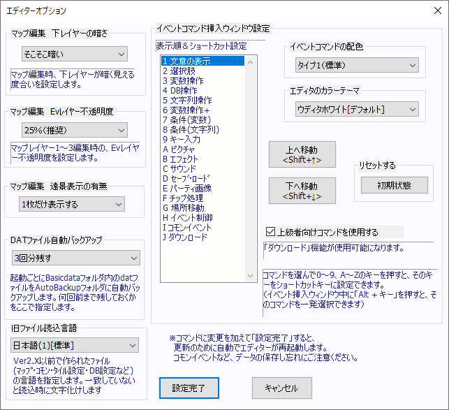

| ウディタホワイト  |
クラシックグレー（動作が不安定なときはこれがおすすめです） |
【エディターオプション】
エディター画面上での挙動を変更するオプションです。
・マップ編集 下レイヤーの暗さ
マップ編集時の下レイヤーが見える度合いを設定します。
5段階で設定することができます。
・マップ編集 Evレイヤー不透明度
マップレイヤー1～3を編集しているときのイベントレイヤーの不透明度を指定します。
イベントレイヤーのせいでマップが見えにくい場合に変更してください。
・マップ編集 遠景表示の有無
マップ編集時の遠景を表示するかどうかを設定します。
「ループ表示」「1枚だけ表示する」「表示しない」から選べます。
・DATファイル自動バックアップ
起動ごとにBasicdataフォルダ内のdatファイルをバックアップできます。
バックアップ周期も選べます。
急なクラッシュで（主にコモンイベント）ファイルが破損したとき、前のバージョンをコピーして復旧させられます。
・旧ファイル読込言語
Ver3より前に作られたファイルは文字コードがUTF-8ではなく言語によって異なるので、言語をここで指定しておきます。
コモンイベントファイル、タイル設定、DB設定など外部から取り入れるデータに影響します。
言語が違う場合、取り入れたデータが文字化けしてしまいます。
（いちおうマップデータも対象ですが、マップを外部データとして取り込むことは少ないでしょう）
・保存時の自動テキスト出力
ここにチェックを入れ、出力したいフォルダを指定すると、「ゲーム設定・DB・マップ・コモンイベント・タイル設定」を保存時、テキスト形式で「～.Auto.txt」という名前で保存されるようになります。
出力されたtxtは、Gitなどのソースコード差分管理システムで取り扱うことが可能です。
※この機能で出力されたTXTファイルは、ゲーム中に読み込んだりはできません。あくまでエディター内の入出力に限られます。
【↑のフォルダへの.Auto.txt入出力】
- 基本データTXT出力 ： ゲーム設定・3つのDB・コモンイベント・タイル設定ファイルを「指定フォルダ」の「BasicData」フォルダ内にtxtで出力します。
- 全マップTXT出力： 全てのマップファイルを「指定フォルダ」に「Data以下のフォルダ構成を再現」してtxtで出力します。
- 全TXT→基本データのみ読込：「指定フォルダ」の「BasicData」フォルダから.Auto.txtファイルを読み取り、Data内のゲーム用ファイルとして出力します。
- 全TXT→ 全マップのみ読込：「指定フォルダ」の全フォルダから.mps.Auto.txtファイルを読み取り、Data内のマップファイルとして出力します。
・イベントコマンド挿入ウィンドウ設定
コマンドの並び順の変更とショートカットキーの設定をします。
コマンドを選んで0～9、A～Zのキーを押すと、Alt+そのキーをショートカットキーに設定できます。
- イベントコマンドの配色
イベントコマンドはカラフルなのですが、見にくい場合はタイプ2にすると赤・緑を使わない配色に変えられます。
- 上級者向けコマンドを使用する
よく分からないまま使うと危険な機能をオープンにできます。
今のところは、オンにするとコマンド一覧に「ダウンロード」コマンドが追加されるのみです。
・エディター全体のカラーテーマ
エディタ全体の色を設定できます。デフォルトでは「ウディタホワイト」、「クラシックグレー」が選択可能です。
その他の色が表示されている場合はこちら→ [P]
|
・ウィンドウ設定
エディター内の各ウィンドウのサイズを12.5%単位で50～200%で設定できます。
全体サイズ補正：ここで設定したサイズ倍率が全体にかかります。
マップイベントウィンドウ：マップイベントウィンドウが「ここで指定したサイズ倍率×全体サイズ補正」のサイズになります。
コモンイベントウィンドウ：コモンイベントウィンドウが「ここで指定したサイズ倍率×全体サイズ補正」のサイズになります。
イベントコマンド挿入ウィンドウ：イベントコマンド挿入ウィンドウが「ここで指定したサイズ倍率×全体サイズ補正」のサイズになります。
データベースウィンドウ：データベースウィンドウが「ここで指定したサイズ倍率×全体サイズ補正」のサイズになります。
アイコン：メインウィンドウのアイコンのサイズを「自動サイズ（全体サイズ補正に依存）」「100%固定」「150%固定」「200%固定」から選べます。
※ただし、「マップ選択」ウィンドウなど、技術的な都合でサイズ補正が反映されない箇所もあります。
・フォント設定
エディター内のフォントを指定できます。
Meiryo UI(太字/中[標準]/小）、MS UIゴシック(太字/中/小）、の6種類から選択可能です。
・「タブ」ウィンドウを使用
一部のウィンドウをタブウィンドウ化できます。チェックを入れるとタブ化が有効になります。
設定できるのは「マップイベントウィンドウ」「コモンイベントウィンドウ」「全データベースウィンドウ」の3種です。